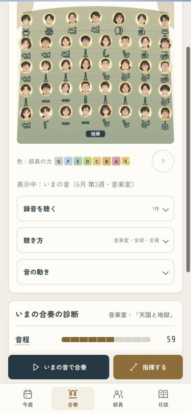
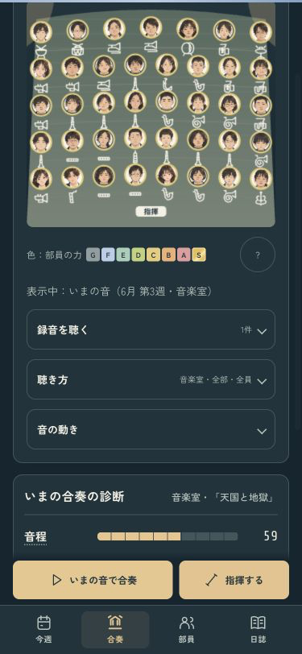
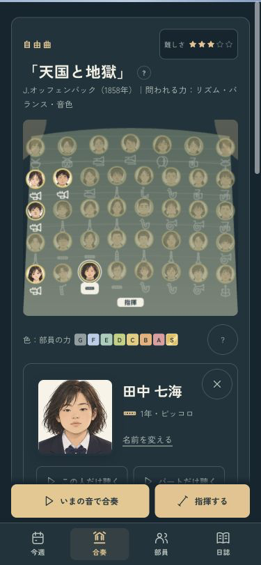
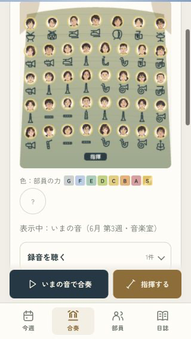
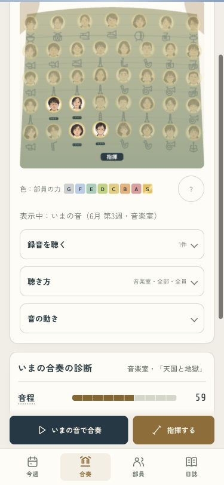

吹奏楽部のつくりかた · 舞台の改善
部員を見て、同じ舞台へ戻る。
カードを開いて閉じても、周りの顔が薄いままにならないようにしました。自分で選んだパートの表示も、そのまま保ちます。
375px · ライト / カードを閉じた後
375px · ダーク / 表示範囲を保つ
自分が選んだ見方を、そのまま。
「音の動き」でパートを選んだら、別のパートの部員を見ても表示は変わりません。カードの選択の印は付けたまま、見ていた範囲へ戻れます。名簿の検索と再生も続きます。
トランペットを表示したまま、フルートの本人を開く
320px · 端の部員を閉じた後も全体表示
修正前の表示を見る
本人を開いた際にそのパートへ自動で絞られ、閉じた後も他の部員が薄いまま残っていました。

375px両テーマ・4タブ、320px、名簿の検索、再生中と昔の録音で確認。音・能力・採点・保存は変更していません。最新版をiPhoneにインストールし、起動中であることも確認しました。端末上での画面操作は未確認です。